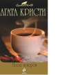

В основе сюжета романа "После похорон" - классическая ситуация: съехавшиеся на похороны миллионера-холостяка родственники делят наследство. Однако тот факт, что почившему помогли отправиться на тот свет, очевиден даже для слепого. Но только Эркюлю Пуаро по силам вычислить убийцу среди многочисленной родни... "Черный кофе" - роман, написанный Чарльзом Осборном по мотивам одноименной пьесы Агаты Кристи. Впервые пьеса появилась на театральных подмостках в 1930 году. К Пуаро обращается за помощью знаменитый физик сэр Клод Эмори. Однако увидеться с ним Пуаро и Гастингс не успевают - ученый отравлен. При этом исчезла открытая им формула сверхмощного взрывчатого вещества...